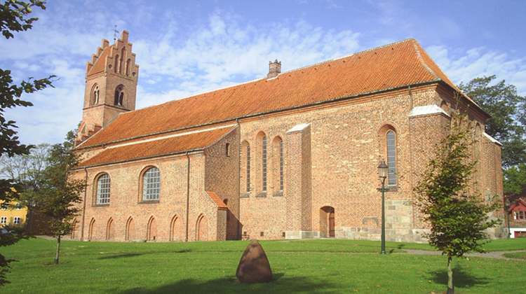
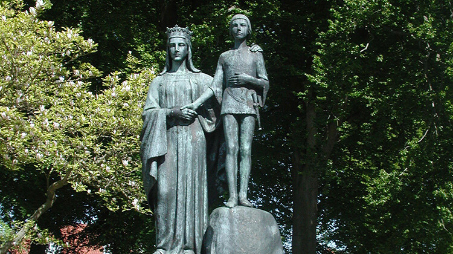
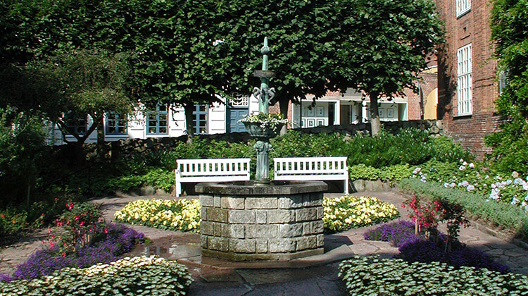

Spot Viborg
Steder
Places
Plätze
Steder
Places
Plätze
Kirker
Churches
Kirchen
Hemmelige Steder
Secret Sights
Geheime Orte
Monumenter
Monuments
Monumente
Ruter
Routes
Strecken
-

KirkerChurchesKirchenViborg Domkirke er kun én blandt mange kirker og kirkelige seværdigheder i Viborg. På Kirkeruten bliver du guidet til 10 seværdige steder. Bl.a. Sortebrødre Kirke, Domprovstegården og Sct. Mogens Kirke. Gåruten tager ca. 45 min.Viborg Cathedral is just one among many churches and ecclesiastical sights in Viborg. On the church route you will be guided to 10 places worth seeing. Among other things: Sortebrødre Church, Domprovstegården and Sct. Mogens' Church. The walking route takes approx. 45 min.Der Viborger Dom ist nur eine von vielen Kirchen und kirchlichen Sehenswürdigkeiten in Viborg. Auf der Kirkeruten werden Sie zu 10 sehenswerten Orten geführt. Unter anderem. Kirche Sortebrødre, Domprovstegården und Sct. Mogens Kirche. Die Wanderstrecke dauert ca. 45min
Seværdigheder på ruten
Sights on the route
Sehenswürdigkeiten auf der Strecke
- Domkirken
- Bispegården
- Sct. Kjelds Kirke
- Statue af Den hellige Apollonia
- Domprovstegården
- Sortebrødre Kirke
- Sct. Mathias Kirke
- Sct. Hans Kirke
- Sct. Mogens Kirke
- Gråbrødre Klosterkirke
- Viborg Cathedral
- Bishop's Residence
- Church of St. Kjeld
- Statue of St. Apollonia
- The Deanery (Domprovstegården)
- Sortebrødre Church
- Church of St. Mathias
- Church of St. Hans
- Church of St. Mogens
- Greyfriars Friary Church
- Dom zu Viborg
- Bischofshof
- Sankt-Kjeld-Kirche
- Statue der heiligen Apollonia
- Dompropsthof
- Dominikanerkirche
- Sankt-Matthias-Kirche
- Sankt-Hans-Kirche
- Sankt-Mogens-Kirche
- Franziskanerkirche
-

MonumenterMonumentsMonumenteViborg har mange oplevelser for kunst- og kulturinteresserede. På kunstruten bliver du guidet til 9 seværdigheder, der bl.a. spænder fra Mindetavlen for Fugle-Mortensen, Bjørn Nørgaards monument for Hans Tausen og Domkirkeporten. Gåruten tager ca. 35 min.Viborg has many experiences for those interested in art and culture. On the monuments route you will be guided to 9 sights that ranges from the Memorial plaque for Fugle-Mortensen, Bjørn Nørgaards monument for Hans Tausen and the Cathedral Gate. The walking route takes approx. 35 minutes.Viborg hat viele Erfahrungen für Kunst- und Kulturinteressierte. Auf der Kunstroute werden Sie führten zu 9 Sehenswürdigkeiten, darunter reicht von der Gedenktafel für Fugle-Mortensen, Bjørn Nørgaards Denkmal für Hans Tausen und das Domtor. Die Wanderstrecke dauert ca. 35 Minuten
Seværdigheder på ruten
Sights on the route
Sehenswürdigkeiten auf der Strecke
- Domkirkeporten
- Relief af Mordet i Finnerup Lade
- Mindetavle for Fugle-Mortensen
- Mindestøtte for Steen Steensen Blicher
- Statue af Hans Tausen 2005
- Statue af Hans Tausen 1836
- Kongehyldningsmonumentet
- Mindesten for Danmarks befrielse
- Stænderpladsen
- The Cathedral Door
- Relief of the assassination in Finderup Lade
- Memorial to birdwatcher Mortensen
- Memorial column to the poet St. St. Blicher
- Monument to Hans Tausen 2005
- Memorial column to Hans Tausen 1836
- The Allegiance Monument
- Memorial stones marking the Liberation of Denmark (1945)
- Stænderpladsen
- Domtor
- Relief über den Mord in Finderup Lade
- Gedenktafel für den Ornithologen Mortensen
- Blicher-Gedenksäule
- Hans Tausen Denkmal 2005
- Hans-Tausen-Gedenkstein 1836
- Königshuldigungsdenkmal
- Gedenksteine für die Befreiung Dänemarks
- Ständeplatz
-

Hemmelige StederSecret SightsGeheime OrteHar du lyst til at dykke ned i de mange hemmelige fortællinger fra Viborg, er denne rute noget for dig. Vi guider dig til 10 af de bedste hemmelige historier. Du kan bl.a. høre om Sukkenes Bro, Værtshuset Paradiset og historien om ‘Billen er dum’. Gåruten tager ca. 40 min.If you want to delve into the many secret stories from Viborg, this is the route for you. We guide you to 10 of the best secret stories. You can e.g. hear about Sukkenes Bridge, the ale house 'Paradiset' and the story of 'The beetle is stupid'. The walking route takes approx. 40 min.Wenn Sie in die vielen geheimen Geschichten von Viborg eintauchen möchten, ist dies das Richtige route etwas für dich. Wir führen Sie zu 10 der besten Geheimgeschichten. Sie können z. von Sukkenes hören Brücke, Värtshuset Paradiset und die Geschichte „Der Käfer ist dumm“. Die Wanderstrecke dauert ca. 40min.
Seværdigheder på ruten
Sights on the route
Sehenswürdigkeiten auf der Strecke
- Stormklokken på Domkirkens tårn
- Skovgaard Museets have
- Latinerhaven
- Margrethekælderen
- Amtmands-gården
- De gamle købmandsgårde
- Værtshuset Paradiset
- Karnapgården
- Billen er dum
- Vestre Landsret og Sukkenes bro
- The warning bell in the cathedral belfry
- The garden behind Skovgaard Museum
- Latinerhaven (the Latin Garden)
- Margrethekælderen
- The Lord Lieutenant's House
- The old merchant's houses
- The alehouse 'Paradiset'
- Bay House
- Billen er dum (unpopular schoolmarm)
- The Western High Court and Bridge of Sighs
- Sturmglocke im Domturm
- Garten hinter dem Skovgaard Museum
- Latinerhaven
- Margrethekeller
- Stiftsamtmannshof
- Die alten Kaufmannshöfe
- Wirtshaus Paradiset
- Karnapgården
- Billen er dum (Billen ist dumm)
- Landesgericht und Seufzerbrücke
Om Spot Viborg
Med Spot Viborg er byens rige kulturarv gjort tilgængelig, så alle har nem adgang til byens spændende kulturarv, uanset om du er med barnevogn, kørestol eller rollator. Find de mest tilgængelige ruter, oplev den rige historie og lyt til fortællingerne om den fantastiske middelalderby. Med Spot Viborg finder du lokationer og informationer på alle kirker, monumenter og også de ‘hemmelige’ seværdigheder.
App’en er tilgængelig på dansk, engelsk og tysk og bruger GPS. Løbende brug af GPS i baggrunden kan mindske levetiden på batteriet i din telefon.
Oplever du problemer med app'en kan du kontakte chmat@viborg.dk.
About Spot Viborg
With Spot Viborg, the city's rich cultural heritage is made accessible, so that everyone has easy access to the city's exciting cultural heritage, regardless of whether you are with a pram, wheelchair or walker. Find the most accessible routes, experience the rich history and listen to the tales of the fantastic medieval city. With Spot Viborg you will find locations and information on all churches, monuments and also the 'secret' sights.
The app is available in Danish, English and German and uses GPS. Continuous use of GPS in the background can reduce the life of your phone's battery.
If you experience problems with the app, you can contact chmat@viborg.dk.
Über Spot Viborg
Mit Spot Viborg wird das reiche kulturelle Erbe der Stadt zugänglich gemacht, sodass jeder einen einfachen Zugang zum divnenden kulturellen Erbe der Stadt hat, unabhängig davon, ob Sie mit einem Kinderwagen, Rollstuhl oder Rollator unterwegs sind. Finden Sie die am besten zugänglichen Routen, erleben Sie die reiche Geschichte und lauschen Sie den Geschichten der fantastischen mittelalterlichen Stadt. Mit Spot Viborg finden Sie Standorte und Informationen zu allen Kirchen, Denkmälern und auch den "geheimen" Sehenswürdigkeiten.
Die App ist auf Dänisch, Englisch und Deutsch verfügbar und verwendet GPS. Die kontinuierliche Verwendung von GPS im Hintergrund kann die Lebensdauer des Akkus Ihres Telefons verringern.
Wenn Sie Probleme mit der App haben, können Sie sich an chmat@viborg.dk wenden.